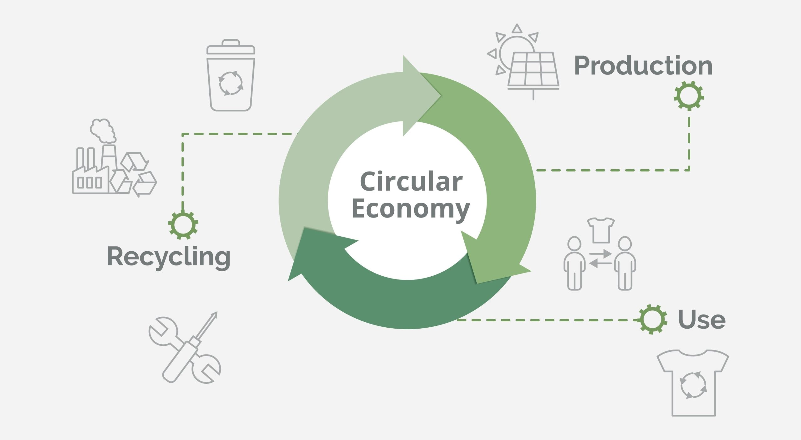

The way we build and live in our homes has a profound impact on the planet. From the energy required for heating and cooling to the materials used in construction, the traditional housing model often places a significant burden on natural resources. Green Architecture, also known as eco-architecture or sustainable building, offers a vital alternative; a design philosophy focused on creating homes that are not only comfortable and durable but also inherently in harmony with the environment.
The shift toward sustainable building is not just an ideal, it is a measurable solution that is already impacting the planet positively. Globally, the building sector accounts for approximately 30% of final energy consumption and a quarter of total energy-related emissions. The good news is that green building practices offer a massive opportunity for change:
- Carbon Reduction: Green buildings, particularly those that are LEED-certified, have demonstrated a significant 34% reduction in carbon dioxide emissions compared to conventional buildings.
- Energy Savings: These eco-friendly structures can achieve up to 25% less energy consumption through methods like superior insulation and passive design.
- Resource Conservation: They also typically use 11% less water, easing the strain on vital shared resources.
These statistics offer a powerful, encouraging outlook, demonstrating that scaling up sustainable construction is one of the most effective ways to combat climate change and ensure the planet’s survival.
The Core Principles of Eco-Architecture
Green architecture is about maximizing efficiency and minimizing negative environmental impact throughout a building’s entire lifecycle; from planning and construction to operation and eventual demolition. The core principles guide designers in creating structures that are resource-efficient and healthier for their occupants.
Energy Efficiency & Passive Design: This is often the most critical element. Instead of relying heavily on mechanical heating and cooling, designers use passive design strategies. This involves: Optimal Orientation, positioning the house to maximize sunlight for natural heat and light in cooler seasons, and to minimize direct sun exposure in warmer months; High-Performance Envelope, using superior insulation, airtight construction, and energy-efficient windows (like double or triple glazing) to regulate interior temperature and reduce energy loss; Natural Ventilation, strategically placing windows and vents to encourage cross-breezes and circulate fresh air, reducing the need for air conditioning; and Renewable Energy Integration, incorporating systems like solar panels (photovoltaic and thermal) and geothermal heat pumps to generate clean energy on-site.
Sustainable Materials: The selection of building materials is key to reducing a home’s “embodied carbon” (the emissions associated with material extraction, manufacture, and transport). Priority is given to: Locally Sourced Materials, reducing transportation emissions; Recycled/Reclaimed Content, using materials like reclaimed wood or recycled steel; and Renewable or Low-Impact Materials, opting for products like bamboo, natural stone, or non-toxic finishes with low volatile organic compound (VOC) emissions for better Indoor Air Quality.
Water Conservation: Sustainable homes treat water as a precious resource by integrating systems such as: Low-Flow Fixtures, reducing water use in toilets, showers, and faucets; Rainwater Harvesting, collecting and storing rainwater for non-potable uses like irrigation or flushing toilets; and Greywater Recycling, reusing gently used water from sinks and showers for landscaping purposes.
Exploreland Farms: A Model for Sustainable Living

The movement toward sustainable housing is gaining momentum globally, and Exploreland Farms is uniquely positioned to lead this charge potentially, particularly with our focus on blending nature and comfortable living. Our emphasis on sustainability, community engagement, and environmental stewardship aligns perfectly with the tenets of eco-architecture.
To illustrate this potential, we can look to successful global models. A prime example is Organo Naandi in Hyderabad, India, a 33-acre eco-habitat that implements a holistic and successful approach to sustainable living. This project demonstrates how large-scale developments can aim for net-zero emissions and achieve water security through meticulous resource management. Crucially, Organo Naandi dedicates approximately 50% of its land to farming, trees, and plantations. This active agriculture allows the community to utilize all composted waste from the houses, effectively creating a closed-loop system for waste and nutrient recycling.
Our existing commitment to ethical sourcing and sustainable agro-forestry provides a ready-made platform for green building integration:
- Local and Renewable Resources: By prioritizing our commitment to sustainable agro-forestry, we can leverage our own land and expertise to source sustainable timber or other natural, locally abundant materials for construction. This dramatically cuts down the embodied carbon footprint associated with long-distance material transport, or better still look for sustainable transport alternative.
- Integrating Housing and Farming: The concept of “Urban Farming Architecture,” which merges housing with food production spaces is a powerful model we are potentially going to roll out. Designing homes with integrated urban farming zones, such as rooftop gardens or communal farming courtyards, transforms residences into self-sufficient ecosystems, reducing “food miles” and fostering a strong sense of community around sustainable practice.
- Holistic Site Planning: Rather than simply placing buildings on land, we can use our environmental stewardship focus to ensure that new developments enhance biodiversity and restore natural habitats. This involves thoughtful site orientation to utilize natural elements (sun, wind, shade) and the use of native, drought-resistant plants for landscaping.
Impact on Planetary Sustainability
The potential for organizations like Exploreland Farms to scale up green architecture has a direct and significant impact on global sustainability. Buildings account for a massive portion of the world’s energy and resource consumption.
- Mitigating Climate Change: By radically cutting energy consumption and integrating renewable energy, sustainable homes drastically reduce greenhouse gas emissions, helping to keep global temperatures in check.
- Conserving Resources: Efficient material use, waste reduction, and water conservation practices alleviate the strain on natural ecosystems, preserving precious resources for future generations.
- Promoting Health and Well-being: Sustainable homes, with their focus on natural light, non-toxic materials, and improved air quality, create healthier, more resilient living spaces that contribute positively to the well-being of residents.
By embracing and innovating within the field of green architecture, we are potentially going to become a powerful example of how modern housing can evolve from being a drain on the environment to an integral, life-breathing part of the natural world, ultimately contributing to a more sustainable future for the planet.